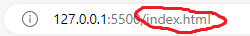
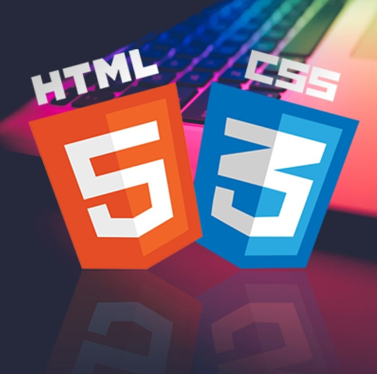
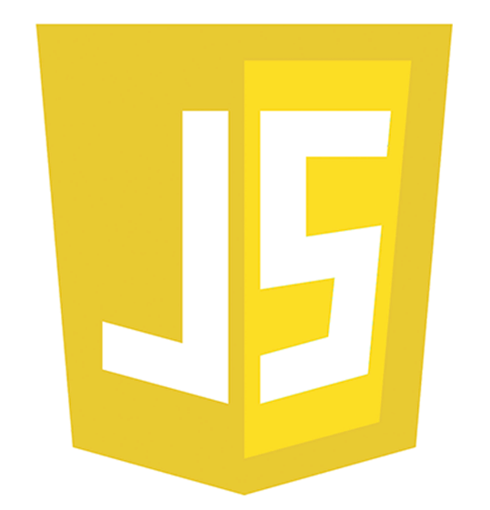
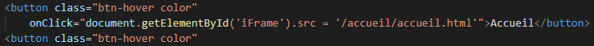
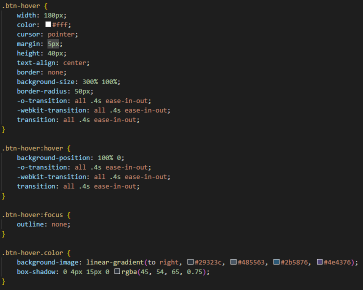
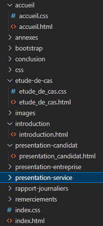
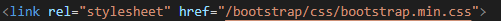

Afin de pouvoir visualiser le rapport de stage sur internet j'ai réalisé ce site web.
Celui-ci a été développé en Html, Css et Js qui sont des langages web, Html signifie Hypertext
Markup Language, Css signifie Cascading Style Sheets et Js signifie Javascript.
Le code html affiche les écritures, les boutons, etc.. le Css affiche le style de la page (couleurs, taille,
police, etc..) et le Javascript sert à faire certaines interactions tels que les boutons qui font défiler les
pages.
Le site est hébergé sur github car c’est un hébergeur de code gratuit et très utilisé par les développeurs.
Un site internet est un ensemble de fichiers qui, pour un site internet porte l’extension
.html. Ces fichiers vont être stockés sur ce qu’on appelle un serveur d’application lorsque celui-ci sera mis en
ligne.

En stockant le site sur ces serveurs, il devient accessible à tous via un navigateur web. C’est d’ailleurs à ces
navigateurs, avant les utilisateurs, que ces fichiers s’adressent puisqu’ils sont construits de manière à être
lisible par les navigateurs en question via des langages bien spécifiques : Html, Css et Javascript.
Chaque page du site internet défile sur la page index.html lorsque l’on clique sur les boutons correspondants.


Voici à quoi ressemble un bouton :
Voici son code Html :

Pour créer un bouton il faut faire une balise « button ». Pour le faire fonctionner afin qu’il affiche la page
d’accueil on lui met l’événement « onClick » en indiquant la source de la page qui va lui permettre d’afficher
la page d’accueil. Les propriétés qu’il y a dans la class sont des propriétés qui vont servir pour le Css.
Voici son code Css :

Quelques explications du code :
Le site est constitué de 10 pages, la page d'accueil qui doit toujours se nommer index.html
ainsi que les autres pages qui constituent le rapport. Leurs styles sont déjà fait directement dans les fichiers
bootstrap mais certaines pages ont quand même un fichier css à coté car certaines class bootstrap ne
fonctionnaient
pas bien donc j'ai recodé certaines propriétés. J'ai utiliser les class bootstrap afin qu'elles correspondent
au css du fichier.

Problématique: Faire une site web pour le rapport de stage.
Réalisation du site web en Html, Css et Js :
Matériels nécessaires :
Procédure :
J'ai dû coder en html, css et js afin de faire un site web regroupant toutes les étapes du rapport de stage.
J'ai commencé par faire l'index.html qui est donc la page d'accueil, pour avoir le corps de la page qui permet
d'afficher le contenu des autres pages sur une seule page afin de gagner du temps et que l'utilisateur n'est pas
besoin de charger chaque pages à chaque fois qu'il change de page.
Toutes les pages sont chargées sur la page principale.
Puis ensuite j'ai codé les autres page une par une. Les pages sont reliées à la pages de style bootstrap grâce à
une
balise link.

Et pour l'hébergement du site j'ai utilisé github.